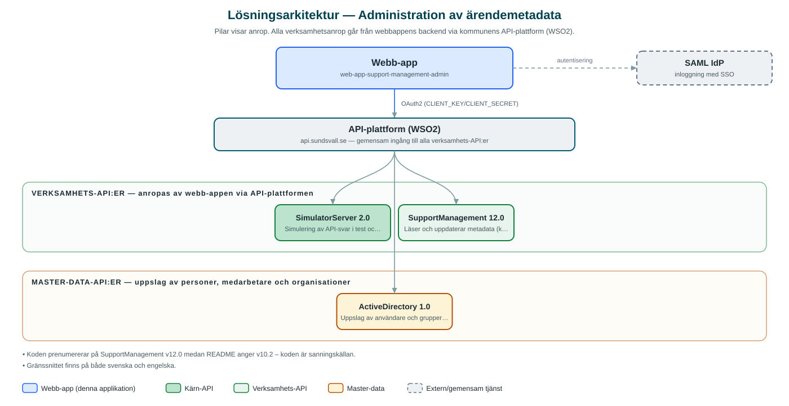

Administration av ärendemetadata
Administrationsgränssnitt där metadata för kommunens ärendehanteringsplattform – kategorier, etiketter, roller, statusar och kontaktorsaker – hanteras per kommun och domän.
Om applikationen
Tjänsten är ett internt administrationsverktyg för den plattform som används för ärende- och supporthantering i kommunen. Administratören väljer först kommun och domän (namnrymd) och kan därefter hantera de metadata som styr hur ärenden kategoriseras och flödar i verksamhetens ärendesystem.
I gränssnittet hanteras kategorier med ärendetyper, etiketter, kontaktorsaker, roller och ärendestatusar, samt konfiguration för e-post. Nya domäner kan skapas och befintliga underhållas, vilket gör att verksamheterna kan anpassa ärendehanteringen utan utvecklingsinsatser.
Verktyget riktar sig till systemförvaltare och administratörer och nås via kommunens gemensamma inloggning.
Det här stödjer applikationen
- Val av kommun och domän – Metadata hanteras separat per kommun och per domän i ärendeplattformen.
- Kategorier och ärendetyper – Skapa och underhålla de kategorier som ärenden klassificeras med.
- Etiketter och kontaktorsaker – Hantera etiketter och kontaktorsaker som används i handläggningen.
- Roller och ärendestatusar – Definiera roller och de statusar ett ärende kan ha.
- E-postkonfiguration – Administrera inställningar för e-post kopplad till domänen.
Teknisk dokumentation
Nedan beskrivs hur applikationen är uppbyggd, vilka API:er den använder och vad som krävs för att driftsätta den. Informationen är härledd ur källkoden och dess konfiguration på GitHub.
Arkitektur

Applikationen består av en webbaserad frontend (Next.js/React med sk-web-gui, i18next och Zustand) och en backend (Node.js/Express med routing-controllers, Prisma och Passport-SAML) som utvecklas i samma kodbas. Verksamhetsanrop går via kommunens gemensamma API-plattform (WSO2) – frontend pratar aldrig direkt med underliggande system. Inloggning: SAML (SSO) med grupp- och behörighetskontroll. Övriga integrationer som förekommer i koden: SAML IdP, WSO2 API-gateway.
Teknikstack
- Frontend: Next.js/React med sk-web-gui, i18next och Zustand
- Backend: Node.js/Express med routing-controllers, Prisma och Passport-SAML
- Test: Jest och Cypress
API-beroenden
Applikationen konsumerar följande API:er via kommunens API-plattform. Versionerna är hämtade ur källkodens API-konfiguration.
| API | Version | Användning |
|---|---|---|
| SimulatorServer | 2.0 | Simulering av API-svar i test och utveckling. |
| SupportManagement | 12.0 | Läser och uppdaterar metadata (kategorier, etiketter, roller, statusar, kontaktorsaker) i ärendeplattformen. |
| ActiveDirectory | 1.0 | Uppslag av användare och grupper i katalogtjänsten. |
Konfiguration och driftsättning
- .env-filer för frontend och backend utifrån .env-exempel
- CLIENT_KEY/CLIENT_SECRET mot kommunens API-gateway
- SAML-certifikat och callback-adresser
- SECRET_KEY för sessionskryptering, CORS-origin
Noterbart ur källkoden
- Koden prenumererar på SupportManagement v12.0 medan README anger v10.2 – koden är sanningskällan.
- Gränssnittet finns på både svenska och engelska.
Källkod
Källkoden är öppen och finns hos Sundsvalls kommun på GitHub. I källkodsförrådet finns även instruktioner för att klona, konfigurera och starta applikationen i egen miljö.